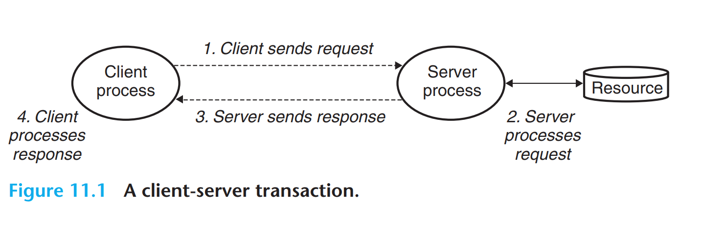
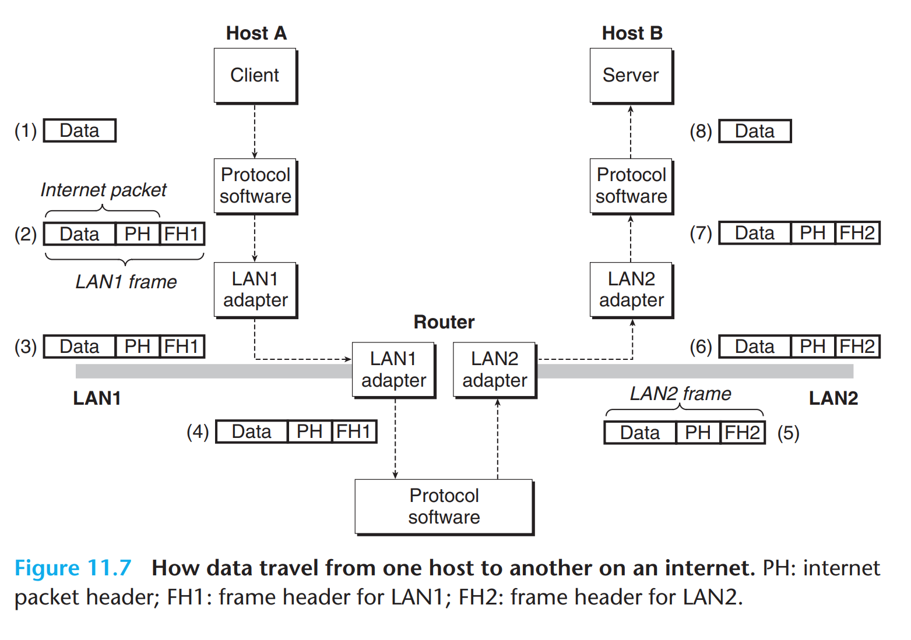
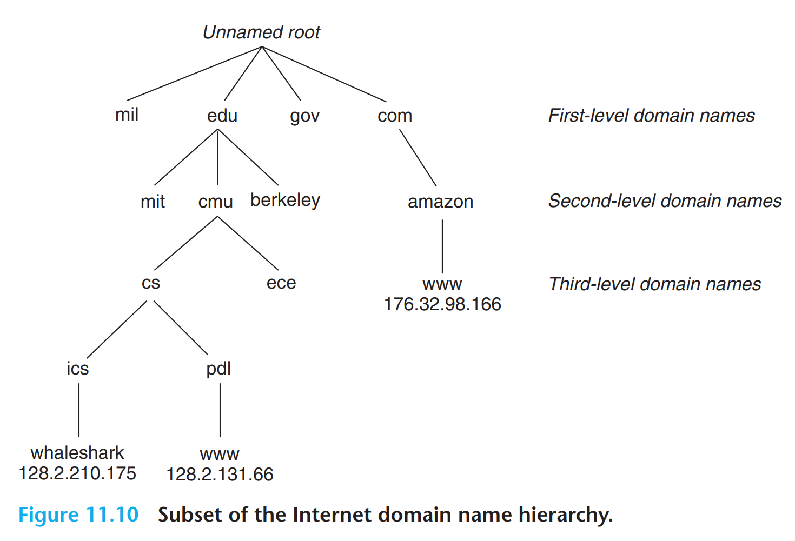
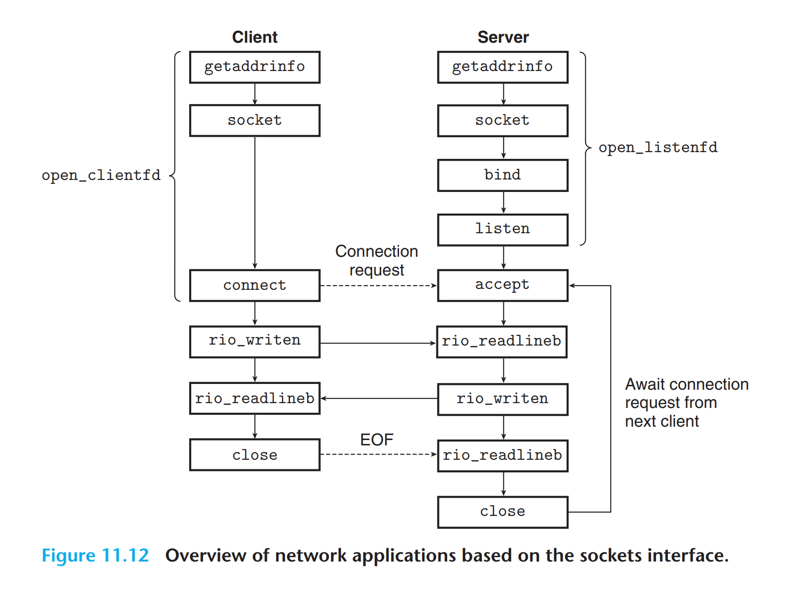
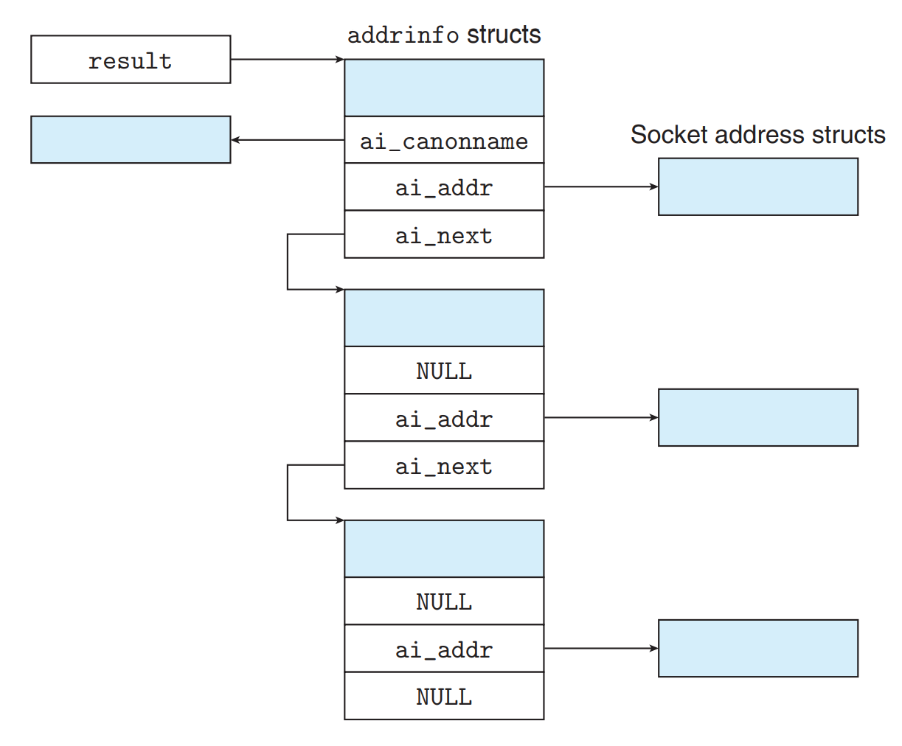
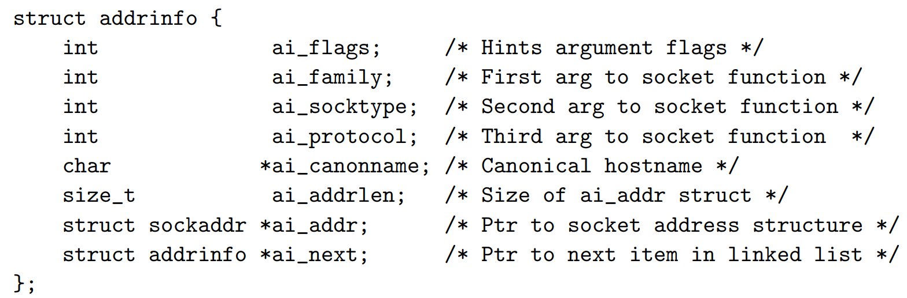

CSAPP Learning #
This document is specially for Chapter 11 of book CSAPP.
client 和 server #

关注两对概念与工作流程：
- client & server
- request & response
网络数据的传输 #

最重要的是体现了封装的思想。
但是依然有很多的细节问题没能解决：
The Global IP Internet: 统一性 #
它使用TCP/IP协议，其中包含解决数据丢失问题的UDP等。
IP Address IP地址 #
相当于住址信息，要上哪里去找人。
在网络上传输的字节数据都使用大端法存储，尽管主机中是小端法。
Internet Domain Names 域名 #

本地部署的是 127.0.0.1 (localhost)。
DNS (Domain Name System) 指的是域名到IP的映射。
Internet Connections 网络连接 #
使用Socket（套接字）来保证信息传输准确性。
Socket Address包括 ip地址 + 16位整数端口号 (port)。
有一些约定俗成的常用端口号，比如email服务用25，Web服务器用80。
Socket Interface 套接字接口 #

相关方法实现 #
int socket(int domain, int type, int protocol);
int connect(int clientfd, const struct sockaddr *addr, socklen_t addrlen);
int bind(int sockfd, const struct sockaddr *addr, socklen_t addrlen);
int listen(int sockfd, int backlog);
int accept(int listenfd, struct sockaddr *addr, int *addrlen);
int getaddrinfo(const char *host, const char *service,
const struct addrinfo *hints,
struct addrinfo **result);
void freeaddrinfo(struct addrinfo *result);
const char *gai_strerror(int errcode);
工作原理：
- 转换 - 将主机名称
host和 端口service自动安全地转换成复杂的网络通信需要的二进制结构体。 - 获取 - 访问DNS服务器，获取对应的IP等信息
- 个性化 - 将获取的信息可以通过
hints设置喜好，以特定形式提供给用户
freeaddrinfo 的功能是释放 getaddrinfo 的内存，防止内存泄漏。


ai_flags可以通过掩码位运算得到对应的hints内容；ai_familyai_socktypeai_protocol都可以直接作为参数传给 *socket；
ai_addrlen和ai_addr又分别可以传给bind和connect。
此外这里我们把 result 传参传入，函数直接修改 result 对应的内容。
为什么result要设计成双重指针？
- 因为一个域名可以有很多个不同的ip地址对应。
int getnameinfo(const struct sockaddr *sa, socklen_t salen,
char *host, size_t hostlen,
char *service, size_t servlen, int flags);
这个是上述的逆操作，如果不想要*host，把*host设成NULL，hostlen参数置0即可。
flag 也是位掩码，设置返回格式，比如service name还是port。
service name 与 port 有什么区别和联系？
- service name是对一些特殊状态端口号的别名区分，比如
80对应http。
此外，csapp给了两个扩展方法：
int open_clientfd(char *hostname, char *port);
int open_listenfd(char *port);
这两个方法封装了整个建立连接过程，直接返回对应文件的文件标识符。
Web Servers #
Web是用户应用层面的存在，区分于FTP的文件检索特征，它使用HTTP协议，用HTML语言书写。
Web content #
Web服务器中的文件资源，通过两种方式提供：
- 提供静态内容，比如 https://tab-ibito.github.io/learning/bomblab
- 运行可执行文件返回结果，即动态内容。
所有文件都通过URL定位。可执行文件的启动项参数通过 /?id=1&name=Tabibito 的后置项输入。
有三个特征：
- 静态和动态不显著区分
- URL的第一个斜杠不是真实服务器机器本地目录，只是虚拟的
- 类似于我们输入 https://www.bilibili.com 的情况，浏览器自动会补全斜杠+index.html
HTTP Request & Response #
建立链接后，通过Request和Response的特定对话方式获取内容。
HTTP Request的格式： #
- 第一行：Request Line 请求行 方法(Method) URI 版本(Version)
GET / HTTP / 1.1
- 第二行：Request Header 请求报头 名字: 内容
Host: www.aol.com
- 第三行：结束
\r\n
这是我们所说的 GET 方法。
HTTP Response的格式： #
- 第一行：Response Line 响应行 版本(Version) 状态码(Status-code) 状态信息(Status-message)
HTTP/1.0 200 OK
- 第二行：Response Headers 响应头 关于content的信息
Content-Type: text/htmlContent-Length: 42092
- 第三行：空行
\r\n - 后面是响应体 (Response Body)，即HTML代码或MIME文件内容
Serving Dynamic Content #
Request方面，通过 /?id=1&name=Tabibito 的后置项输入传参（CGI-Environment）。
服务器接受之后会 fork 并 execve 对应地址内容的子进程，传入参数开始工作。
子进程把输出结果给到 stdout，但是它重定向到对应socket的文件描述符去，即 dup2(connfd, STDOUT_FILENO)，这个过程发生在执行 execve() 前。
此外，子进程有完成HTTP Response的责任。
By Tab_1bit0